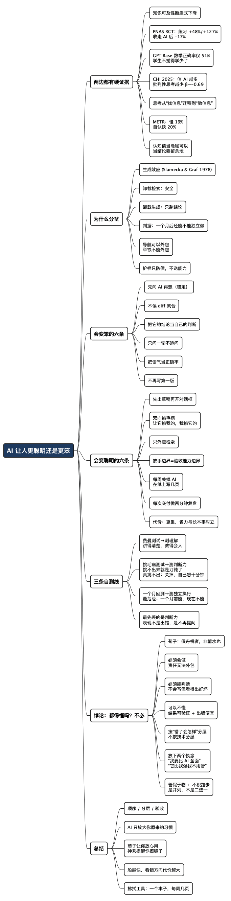

AI 让人更聪明还是更笨：分水岭在“生成的那一步”
Posted on 三 19 8月 2026 in AI
| Abstract | AI 让人更聪明还是更笨：分水岭在“生成的那一步” |
|---|---|
| Authors | Walter Fan |
| Category | learning note |
| Version | v1.0 |
| Updated | 2026-08-19 |
| License | CC-BY-NC-ND 4.0 |
AI 让人更聪明还是更笨：分水岭在“生成的那一步”
做 code review 这些年，我最常问的一句话是：“这段为什么这么写？”
这句话以前很好答。作者会说因为并发有坑、因为上游那个字段可能为空、因为压测跑出来慢。这两年这句话开始卡壳了——不是答错，是答不上来，然后对方会补一句：“Cursor 是这么给的，测试过了，能跑。”
我不想装清高，我自己也栽。有一阵子我写文档、查协议、改脚本，第一反应都是先开个对话框。等到某天有人问我一个我上周才“亲手”解决过的问题，我张了半天嘴，只能说“我再去翻一下记录”。那一刻我知道，事情不太对。
所以这个问题值得认真回答：AI 到底让人更聪明还是更笨？
我的答案是：两件事同时为真，而分水岭很具体——生成答案的那一步，发生在谁的脑子里。你先自己想一遍再问 AI，它是放大器；你把想的这一步整个外包出去，它是抽水机。同一个工具，同一个团队，一年下来能拉开一个数量级的差距。
不过这话说完会立刻撞上一个反问：那 AI 做的我都得懂吗？它会的我都得会吗？当然不必——第六节专门拆这个执念，那也是全文我自己最纠结的一节。
一、两边都有硬证据，而且都不弱
先说“变聪明”那一侧，这个不用论文我也认。我学 Zanzibar 的授权模型、啃 DPoP 的规范、给女儿讲清楚一个物理概念——过去要在搜索引擎、论坛、英文标准文档之间反复跳，现在半小时就能建起一个像样的心智模型。获取知识的成本是断崖式下跌的。对好奇心还在的人，这是过去二十年最大的一次红利。
“变笨”那一侧，有几项研究把它量到了具体数字。
第一个是 PNAS 上那个土耳其高中数学的随机对照试验（Bastani et al., PNAS 2025）。近千名学生分三组：不给 AI、给一个普通 ChatGPT 界面（GPT Base）、给一个加了教学护栏、只给提示不给答案的版本（GPT Tutor）。练习环节的成绩，GPT Base 提升 48%，GPT Tutor 提升 127%，非常亮眼。
然后研究者把 AI 收走，考闭卷。用过 GPT Base 的学生，考得比从来没用过 AI 的对照组还差 17%。 GPT Tutor 组抹掉了这个负效应，但也没高出对照组——护栏防住了伤害，没变出增益。
更扎心的是两个细节：GPT Base 的数学答案只有 51% 是对的（42% 逻辑错、8% 算错）；而考差了的那批学生，自己并不觉得学得少了。对话记录分析显示，绝大多数人是拿它直接要答案的。
第二个是微软研究院和卡内基梅隆的问卷研究（Lee et al., CHI 2025），319 位每周都用 AI 的知识工作者，936 个真实用例。结论有两条对得上我的直觉：
- 用 AI 时，各类认知活动的“费脑程度”普遍下降，报告“省力很多/省力”的比例在 55%–79% 之间；
- 对 AI 越有信心，批判性思考越少（β = -0.69，p < 0.001）；对自己越有信心，批判性思考越多，代价是感觉更累。
它还讲了一个更微妙的变化：批判性思考没有消失，而是迁移了——从“找信息”迁移到“验信息”，从执行迁移到监工。这个迁移本身不坏，坏的是很多人只完成了前半程（不再执行），没做后半程（也不去验）。
第三个是 METR 的开发者实验（METR, 2025-07），16 位常年维护大型开源仓库的资深开发者，246 个真实 issue，随机分配允不允许用 AI。结果：用 AI 的那组慢了 19%。而他们事前预期能快 24%，事后即使已经慢了，仍然认为自己快了 20%。
这个 19% 我不太敢外推——16 个人、特定仓库、2025 年初的模型。但那个 20% 的错觉我很敢外推，因为它和上面两项研究指向同一件事：
AI 带来的能力损耗，是有麻醉效果的。 你的产出看起来更好了，感觉也更顺了，唯一变差的东西——不带 AI 时你还剩多少——恰好是你日常不会去测的。
顺便说一句关于分寸。MIT Media Lab 那个 EEG 研究（Kosmyna et al., arXiv:2506.08872）传播最广，提出了“认知债”这个说法：用 LLM 写作文的人脑区连接最弱、对文章的归属感最低、写完几分钟连自己的句子都引不出来。方向上我信，但它是预印本，n=54（第四轮只剩 18 人），并且已经有一篇正式评论（Stanković et al., arXiv:2601.00856）指出样本量、EEG 分析口径和统计报告的问题。所以“认知债”当隐喻用很好，当结论引用要留余地。 PNAS 那个 RCT 和 CHI 那个大样本问卷，是更硬的地基。
二、为什么会分岔：被卸载掉的是检索，还是生成
看完这些数字，容易得出“少用 AI”这个结论。我不同意。真正有解释力的不是用量，是你把哪一步交出去了。
认知心理学里有个很老的发现，叫生成效应（generation effect）：同样的词，自己生成出来的比读到的记得牢。Slamecka 和 Graf 1978 年做了五个实验把它坐实（Slamecka & Graf, 1978），后来测试效应、必要难度那一系列研究都在这条线上。翻译成大白话：
让知识留在脑子里的，不是看到答案，是自己把答案挣出来的那个费劲的过程。
现在把这条放回工程日常。用 AI 会卸载掉两类完全不同的动作：
| 卸载检索（安全） | 卸载生成（有代价） | |
|---|---|---|
| 具体动作 | 查 API 签名、找规范条文、认报错、翻历史 commit | 想方案、拆问题、下判断、写第一版、做取舍 |
| 你交出去的 | 翻资料的时间 | 挣答案的那个过程 |
| 之后你手里剩什么 | 结论 + 判断力 | 只有结论 |
| 一个月后独立做 | 照样能做 | 大概不能 |
我十几年前查一个 SIP 信令的边界行为，得抱着 RFC 啃半天。这半天里的绝大部分是纯检索，卸载掉它我一点不心疼，省下来的时间正好用来想那个真正的问题：这个边界在我们的系统里会不会炸。这就是变聪明的用法——AI 吃掉了检索成本，我把省出来的预算全押在生成上。
反过来，如果我连“这个边界会不会炸”都直接问它，然后把回答粘进设计文档，那我这半天什么都没赚到。文档更漂亮，判断力没长，而且我丢了一个信号：过去写不出来说明我没想通，现在照样能输出二十页。（这个信号消失的问题，我在《为什么 AI 写的文档废话那么多》里专门写过。）
打个不那么工程的比方。导航软件替我记路，我不觉得损失什么，我的判断力本来也不在“记路”上。但如果健身房能派人替我举铁，举完把肌肉记在我账上——那不叫效率，那叫自欺。代码、方案、文章，都属于举铁那一类：过程即产物。
这也解释了 PNAS 那个实验里最反直觉的一条：GPT Tutor 组考得不比对照组差，也不比对照组好。因为护栏做的事情，就是把生成那一步硬留在学生脑子里——只给提示、不给答案。留住了，就不欠债；但也没白送能力，能力还得自己长。
三、会变笨的六个做法
这几条不是编的，是我在自己身上和 review 里反复见到的。每一条我都踩过至少一次。
- 先问 AI，再想。顺序错了，全盘皆错。一旦看过它的答案，你就再也想不出你原本会想出的那个方案了——锚定效应会替你把思路收窄。这是最贵的一条错，因为它一步就把生成让了出去。
- 不读 diff 就合。“测试过了，能跑”是最危险的四个字。跑得通只说明 happy path 对了，说明不了并发、边界、失败路径、以及三个月后接手的人能不能看懂。你要为结果负责，就得理解 AI 干了什么（我在《完全由 AI 生成的代码，我越看越心惊》里展开过）。
- 把 AI 的结论当成自己的判断。它给了三个方案，你选了第二个，然后在评审会上讲得像自己想的。这不是撒谎，是自己也糊涂了——你没有比较过三个方案的代价，你只是选了看起来最顺的那个措辞。
- 只问一轮，不追问，也不挑刺。问一次拿到一个像样的回答就收工。AI 最有价值的地方恰恰在第二轮到第五轮：反例呢？边界呢？流量涨十倍呢？那个字段是空的呢？不追问，你拿到的只是这个话题的互联网平均答案。
- 把它的自信当正确率。GPT Base 在中学数学上的正确率是 51%，但语气从来是 100%。语气和置信度在 LLM 里几乎是解耦的，而人天生用语气估概率。它越顺着你说，你越该警惕（这个我单独写过：《别让 AI 只会说“你是对的”》）。
- 不再自己写第一版。这条最隐蔽，因为看不出损失。第一版是最难写的，也是唯一让你被迫把问题想清楚的那一版。长期不写第一版，你会退化成一个只会评价的人——而评价能力本身，是靠写过很多第一版养出来的。
一句话总结这六条：它们的共同点不是“用了 AI”，是“把想的那一步整个让了出去，还没有补上验收”。
四、会变聪明的六个做法
对称地，这六条是我现在尽量守住的。
- 先出草稿，再开对话框。哪怕三行、哪怕中英夹杂、哪怕逻辑不通。只要那三行是你脑子里生成的，生成效应就发生了，后面 AI 怎么改都是加成。我现在的规矩是：设计文档必须先有一页手写的骨架，代码必须先有一个我自己想清楚的方案边界。
- 双向挑毛病：让它挑我的，我也挑它的。这是我觉得最划得来的一个习惯，两个方向都得走：
- 让它挑我的。换个问法就能换掉一半风险：不问“该怎么做”，问“我打算这么做，它在什么情况下会挂”。让它去找我的漏，比让它替我做决定，收益高一个量级。
- 我挑它的。它给的方案，长处在哪、短处在哪、什么场景下成立、换个量级还成不成立、代价是谁在付。这一步是把“它的方案”变成“我的判断”的唯一通道。
- 明确区分检索和生成，然后只外包检索。动手前花十秒分个类：这一步是“查得到的”还是“想出来的”？查得到的尽管交出去，越多越好；想出来的自己先过一遍。这条是上面所有做法的总纲。
- 只在自己验收得了的领域放手。这是我给自己划的红线。我看得懂的后端代码，可以让它大段生成，因为我能在五分钟内判断好坏；我不熟的前端动效，就只让它做小步、可回滚的改动。放手的边界 = 你的验收能力边界，不是 AI 的能力边界。
- 每周关掉 AI，在纸上写几页。这半年我把久违的笔记本又拿出来了，每周写上几页——最近在想什么、哪件事没想通、这周学到的东西怎么串起来。纸没有自动补全，写不下去就是真的没想清楚，糊不过去。这几页是我唯一还能诚实测量自己的地方。写什么不重要，能卡住你很重要。
- 把每次 AI 交付变成一次复盘。它给的方案里有个我没想到的角度，我会花两分钟搞清楚：它为什么会这么想，我为什么没想到。不做这一步，一年下来你只是搬运了三百个答案。
再补一句边界：这六条都有成本。CHI 那项研究里，自信心强、真去验证的人报告的认知负担是更高的。省力和长本事，在同一件事上是对立的。所以别指望既轻松又变强——你只能选在哪些事上省力，在哪些事上较劲。
五、三条不靠感觉的自测线
既然这个损耗自带麻醉，就得有不靠感觉的尺子。我用三条，从软到硬。
第一条：费曼测试——你讲不讲得清楚
费曼（Richard Feynman）的学习法，一句话就能说完：能把一件事讲到让外行听懂，你才算真懂；讲的时候卡住的地方，就是你没懂的地方。这个方法在 AI 时代忽然变得非常好用，因为它测的正好是 AI 替不了你的那一段。
具体到工程日常，就三个问题，每次交付前问自己：
- 这个方案我能不能不看屏幕，白板上给同事讲一遍？
- 讲的时候有没有一个环节我只能说“它就是这么写的”？
- 这段代码我能不能教给一个新人，包括为什么不用另外那种写法？
“它就是这么写的”出现的位置，就是你的窟窿。这个测试的好处是零成本、随时能做，而且骗不了人——你在别人面前卡壳的那一秒，比任何自我评估都准。
第二条：挑毛病测试——你还挑不挑得出来
这条是我现在最看重的，因为它是最早的预警信号。
AI 给你一个方案，你能不能说出它的三个短处？不是鸡蛋里挑骨头，是真问题：这个设计在什么规模下会崩、这个抽象把什么复杂度藏起来了、这段代码三个月后谁来维护、这个取舍是谁在付代价。
如果连续几次你都挑不出毛病，几乎可以确定不是它太强，是你的刀钝了。 AI 生成的方案在中等难度上确实经常“看起来没毛病”——正确率不到六成的时候语气也是笃定的（PNAS 那个 51% 就是这么来的）。你挑不出来，通常不意味着它对，只意味着你已经不在审了。
真挑不出来的时候，别硬撑着继续用。关掉它，自己把这个问题从头想一遍，或者写下来。十分钟就够。你会发现要么问题被你想出来了，要么你搞清楚了自己为什么想不出来——两种结果都比继续点“接受”值钱。
第三条：一个月回测——拿走它你还剩多少
最硬的一条，也最麻烦，一个月做一次就行：
把 AI 拿走，一个月前你和它一起搞定过的那件事，现在你能不能独立再做一遍？ 能——它在给你加杠杆。不能，而且一个月前也不能——那你从来没学会，只是把它租来用（这本身没问题，只要你别以为那是你的能力）。最危险的是第三种：一个月前能，现在不能了。那就是真的在退。
三条连起来看：费曼测试测的是理解，挑毛病测试测的是判断力，一个月回测测的是独立执行力。三样里最先丢的通常是第二样，而它恰恰最不容易被察觉——因为判断力退化的表现不是出错，是不再提问。
六、另一个悖论：AI 做的我都得懂吗
写到这里我得自己拆一下台。上面那三条测试如果无限外推，会推出一个荒谬的结论：AI 做的每件事我都得懂，AI 会的每件事我都得会。
那不可能，也没必要。它读过的资料我这辈子读不完，它记住的 API 我背不下来，它十秒钟写完的正则我要查三次文档。真按这个标准活，等于宣布不许用 AI——那我们前面费半天劲讨论的分寸就白讨论了。
荀子早就把这事说透了。《劝学》里那段是我最喜欢的一段：
假舆马者，非利足也，而致千里；假舟楫者，非能水也，而绝江河。君子生非异也，善假于物也。
坐车的人不必自己跑得快，坐船的人不必自己会游泳。“非能水也”这三个字就是给执念开的药方——借船渡河的人，不需要先成为游泳健将。荀子的落点也很清楚：君子并不是天生比别人强，只是善于借助外物。AI 就是这个时代最好的那条船，怕它、躲它、非要证明自己不用它也能行，是另一种糊涂。
所以问题不是“要不要懂”，而是哪些必须懂，哪些可以不懂。我用三层来分：
| 层次 | 要求 | 例子 | 判据 |
|---|---|---|---|
| 必须会做 | 能独立生成，不许外包 | 方案取舍、风险判断、故障时的第一轮决策、文章的核心观点 | 出了事你要负责，而且没有第二个人能替你负 |
| 必须能判断 | 不必会写，但必须看得出好坏、说得出代价 | AI 写的那段并发控制、一个我不熟的库的用法、一段前端实现 | 你要在评审会上为它背书 |
| 可以不懂 | 结果可验证就够，过程不必进脑子 | 正则表达式的具体写法、样板代码、格式转换、我背不下来的 API 签名、一次性脚本 | 错了能立刻发现，且改起来便宜 |
这张表的关键在第三层，而第三层的通行证只有一个：结果可验证，且出错代价低。
- 一个正则我看不懂没关系，因为我可以喂它二十个用例，对了就是对了。验证成本远低于理解成本，那就不必理解。
- 一段权限校验的代码我必须懂，因为它错了不会当场报错，只会在某个客户的数据泄露之后报错。没有便宜的验证手段，就只能用理解来兜。
同一个东西在不同场景里也会换层。同样一段 SQL，跑在我的分析脚本里属于第三层（跑错了重跑一次），跑在生产库的迁移脚本里属于第一层（跑错了没有第二次）。所以不是按技术分层，是按“错了会怎样”分层。
这也回答了“如何放下执念”。要放下的执念其实是两个，而且是反着来的：
- 一个是“我必须比 AI 全面”。放下它。你的知识面和记忆力比不过它，这是事实，不丢人；较劲的人只是在用自尊心换时间。
- 另一个是“反正它比我强，我不用管了”。这个更得放下。第一层和第二层是你的活，谁也替不了——因为责任不能外包。代码出了问题，客户找的是你，不是模型。
顺便，荀子那篇里还有一句话，位置就在“善假于物”往后几行，很少被一起引：
不积跬步，无以至千里。
“善假于物”讲的是够得到千里，“积跬步”讲的是那千里你自己得走。同一篇文章里，两句话隔着不到十行，是并列的，不是二选一。荀子劝的是“学”，从头到尾没劝人少借工具——他劝的是别把借来的当成自己长出来的。
总结：分水岭在“生成的那一步”
AI 让人更聪明还是更笨，取决于三件事，而它们全都在人这一侧：
- 顺序：先想还是先问；
- 分层：这件事属于必须会做、必须能判断，还是可以不懂；
- 验收：你有没有能力、有没有意愿，去检查它给你的东西。
这三件事上守住了，AI 是我这二十年见过最好的杠杆；三件事都松了，它就是一台把你的判断力慢慢抽走、同时让你感觉良好的机器。它不会替你变聪明，也不会主动让你变笨——它只会把你原来的习惯放大。
工具从来如此。只不过这一次，它放大得特别快，而且反馈特别迟。
所以这篇文章的两句古话，得摆在一起读，缺一句都会走偏：
君子生非异也，善假于物也。——荀子《劝学》 时时勤拂拭，勿使惹尘埃。——神秀
前一句让你放心用，别怕，别较劲，别把不会游泳当耻辱；后一句提醒你，镜子还是得自己擦。判断力是会积灰的，而且积得无声无息——它不会某天忽然崩掉，只会在一次次“看着没问题就接受了”里慢慢钝掉。你不勤拂拭，没人会替你拂。
工具借得越多，那面镜子越要紧。因为船越快，看错方向的代价越大。
我的拂拭工具很土：一个笔记本，每周几页。
行动清单
今天就能做的六件事：
- 改一个顺序。挑一件你明天要做的事（写设计、改 bug、回一封难回的邮件），强制自己先写三行草稿再开对话框。就一次，感受一下差别。
- 做一次费曼测试。最近一个 AI 帮你完成的方案，找个同事讲五分钟。记下你卡壳的位置——那就是你要补的地方。
- 挑三个毛病。下一次 AI 给你方案，先别接受，写下它的三个短处。挑不出来就关掉它，自己把问题想十分钟。
- 改一个问法。把“该怎么做”改成“我打算这么做，它什么情况下会挂”，对比两次回答，你会知道哪种问法值钱。
- 给手上的活分个三层。拿一张纸列出你这周的活，标上“必须会做 / 必须能判断 / 可以不懂”。判据只有一句：错了会怎样、能不能立刻发现。分完你就知道该在哪儿较劲、在哪儿放手。
- 买个本子，这周写三页。手写，不用工具，不求成文。想什么写什么，卡住就停在那儿——卡住的地方就是收获。
顺便，如果你带团队：review 的时候多问一句“这段为什么这么写”。这句话既是质量关卡，也是给对方一次费曼测试的机会。省下来的那点时间，远不如一个还长着判断力的队友值钱。
全文思维导图
@startmindmap
<style>
mindmapDiagram {
node {
BackgroundColor #F8F9FA
RoundCorner 10
Padding 10
FontSize 13
}
:depth(0) {
BackgroundColor #1E3A5F
FontColor white
FontSize 18
FontStyle bold
}
:depth(1) {
FontSize 15
FontStyle bold
}
:depth(2) {
FontSize 13
}
}
</style>
* AI 让人更聪明还是更笨
** 两边都有硬证据
*** 知识可及性断崖式下降
*** PNAS RCT：练习 +48%/+127%\n收走 AI 后 -17%
*** GPT Base 数学正确率仅 51%\n学生不觉得学少了
*** CHI 2025：信 AI 越多\n批判性思考越少 β=-0.69
*** 思考从“找信息”迁移到“验信息”
*** METR：慢 19%\n自认快 20%
*** 认知债当隐喻可以\n当结论要留余地
** 为什么分岔
*** 生成效应 (Slamecka & Graf 1978)
*** 卸载检索：安全
*** 卸载生成：只剩结论
*** 判据：一个月后还能不能独立做
*** 导航可以外包\n举铁不能外包
*** 护栏只防债，不送能力
** 会变笨的六条
*** 先问 AI 再想（锚定）
*** 不读 diff 就合
*** 把它的结论当自己的判断
*** 只问一轮不追问
*** 把语气当正确率
*** 不再写第一版
** 会变聪明的六条
*** 先出草稿再开对话框
*** 双向挑毛病\n让它挑我的，我挑它的
*** 只外包检索
*** 放手边界=验收能力边界
*** 每周关掉 AI\n在纸上写几页
*** 每次交付做两分钟复盘
*** 代价：更累，省力与长本事对立
** 三条自测线
*** 费曼测试→测理解\n讲得清楚，教得会人
*** 挑毛病测试→测判断力\n挑不出来就是刀钝了\n真挑不出：关掉，自己想十分钟
*** 一个月回测→测独立执行\n最危险：一个月前能，现在不能
*** 最先丢的是判断力\n表现不是出错，是不再提问
** 悖论：都得懂吗？不必
*** 荀子：假舟楫者，非能水也
*** 必须会做\n责任无法外包
*** 必须能判断\n不会写但看得出好坏
*** 可以不懂\n结果可验证 + 出错便宜
*** 按“错了会怎样”分层\n不按技术分层
*** 放下两个执念\n“我要比 AI 全面”\n“它比我强我不用管”
*** 善假于物 + 不积跬步\n是并列，不是二选一
** 总结
*** 顺序 / 分层 / 验收
*** AI 只放大你原来的习惯
*** 荀子让你放心用\n神秀提醒你擦镜子
*** 船越快，看错方向代价越大
*** 拂拭工具：一个本子，每周几页
@endmindmap

参考资料
- Bastani, H., Bastani, O., Sungu, A., Ge, H., Kabakcı, Ö., & Mariman, R. (2025). Generative AI without guardrails can harm learning: Evidence from high school mathematics. PNAS, 122(26).
- Lee, H.-P., Sarkar, A., Tankelevitch, L., Drosos, I., Rintel, S., Banks, R., & Wilson, N. (2025). The Impact of Generative AI on Critical Thinking. CHI '25.
- METR (2025). Measuring the Impact of Early-2025 AI on Experienced Open-Source Developer Productivity.
- Kosmyna, N. et al. (2025). Your Brain on ChatGPT: Accumulation of Cognitive Debt. arXiv:2506.08872（预印本）；以及评论 Stanković, M. et al. (2026). Comment on: Your Brain on ChatGPT. arXiv:2601.00856.
- Slamecka, N. J., & Graf, P. (1978). The Generation Effect: Delineation of a Phenomenon. JEP: Human Learning and Memory, 4(6), 592–604.
本作品采用知识共享署名-非商业性使用-禁止演绎 4.0 国际许可协议进行许可。 欢迎在我的个人网站 https://www.fanyamin.com 访问原文并评论。